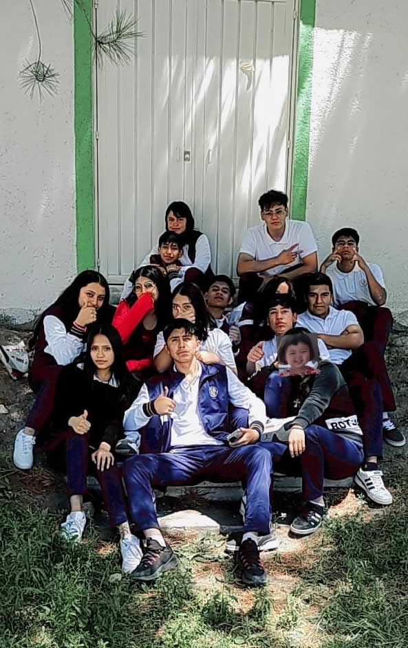

He sido de pocos a migos desde mi infancia pero ahora agradezco al destino y a la cida por las maravillosas amistades que me ha brindado, son pocas pero son realmente sinceras.
VALE Es mi mejor amiga y la quiero demasiado, es una de las personas más importantes en mi vida, al igual que mi persona favorita, me encanta pasar tiempo juntas y pasar horas hablando y riendo, le tengo tanta confianza y solo ella me conoce de tal forma, somos ella y yo contra el mundo que se derrumba contra nosotras, me ha demostrado lo que es una verdadera amiga. |
|
ASKA y ELEAZAR Una de mis mejores amistades hombres, dicen que la amistad entre un hombre y una mujer no existe, pero ellos me han demostrado que es tener un verdadero amigo, simpre me apoyan y estan incondicionalmente, han formado gran parte de i vida social y e han echo aun más fuerte |
|
LOS HERNÁNDEZ Ellos 3 son en verdad mis amigos del alma, vale, askary y eleazar, los tres por casualidad de la vida nos apellidamos Hernández haciendo el comienzó de una linda amistad, llevamos toda laprepa siendo los mejores amigos y los mejores en hacer exposiciones juntos, solo deseo que está amistad perdure por el resto de nuestras vidas. |
|
ALBERTO Otro gran amigo es el tan sonado "cocas", aunque es poca la amistad, su gran forma de hacer hace que pueda ser yo misma con el, y además se lleva bien con mis amiguitos. |
|
 |
Tengo grandes amistades que la vida me ha permitido conocer y que agradezco tanto su amistad y apoyo incondicional y aunque no haya muchas fotos compartiendo momentos, los momentos vividos se llevan en el alma, entre ellas:
|
BRISS, FATI y JOSS Como olvidarme de ustedes, ya tenemos 5 años de amistad y sin duda son de las mejores amistades que pude tener, a fati y briss las tengo cerquita pero siempre extraño a mi joss que esta en otra escuela, aun asi siemore tratamos de estar juntas y ponernos al día cada que podemos, las quiero tanto. |
|